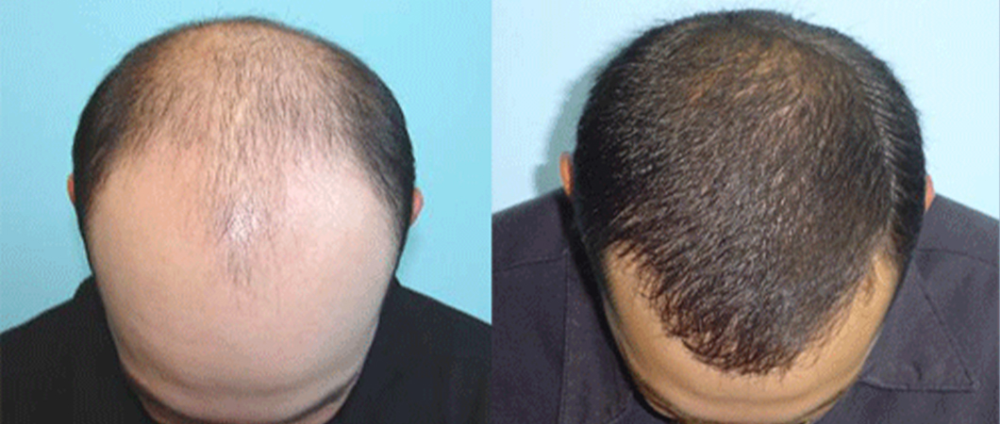
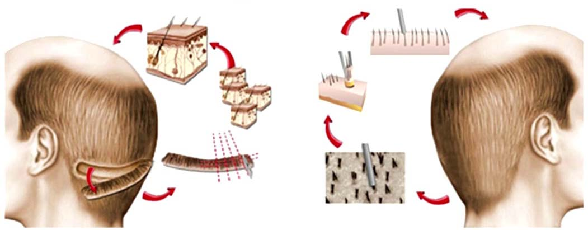
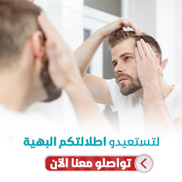
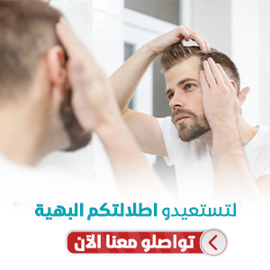

زراعة الشعر
تعتبر زراعة الشعر إجراءً تجميلياً شاع استخدامه في السنوات الأخيرة بتقنيات متطورة ودون شعور بالألم، ويتم ذلك عبر الاستعانة بمناطق أخرى مانحة من الجسم

كيفية زراعة الشعر في تركيا بالتفصيل
الكثير من الزائريين يقصد السياحة العلاجية في تركيا، حيث تتميّز السياحة الطبية في تركيا بأسعارها المنافسة على مستوى المنطقة ككلّ، فضلاً عن الخبرات الطبيّة المؤهّلة والمدرّبة على أحدث التقنيّات في هذا المجال.
جدول المحتويات
ما هي عملية زراعة الشعر؟
قبل الخوض في موضوع زراعة الشعر في تركيا لا بدّ من توضيح حول طبيعة العملية.
زراعة الشعر: هي عمليّة يتمّ إجراؤها بقصد استعادة الشعر المفقود في المناطق التي تعاني من فقدان كلّيّ أو جزئيّ للشعر.
يوجد عدّة عمليّات تمّ تطويرها لاستعادة الشعر ولكنّ عمليّة الزراعة تبقى الأكثر استخداماً والأفضل من حيث النتيجة.
وتتضمّن عملية زراعة الشعر استخراج أجزاء صغيرة من الجلد الذي يحمل الشعر من المناطق الغنية بالشعر داخل فروة الرأس لتتمّ زراعتها في المناطق الأخرى التي تعاني من فقدان الشعر.
اسباب تساقط الشعر عند الرجال والصلع
لطالما كانت النظرية السائدة تلقي اللّوم في سقوط الشعر على ضعف الدورة الدمويّة في فروة الرأس، أو على نقص بعض الفيتامينات، أو القشرة، أو حتى ارتداء القبعات وأغطية الرأس بشكل مستمرّ.
ولكنّ كلّ تلك النظريات تمّ إثبات خطئها، وبإمكانك أن تدرك ذلك من خلال النظر إلى أيّ رجل تجاوز الخمسين ولا يعاني من الصلع أو سقوط الشعر، وبإمكانك التنبّؤ كذلك بأنّه لن يُصاب بالصلع بعد الآن!
فقدان الشعر بشكل أساسيّ يمكن تفسيره بعدّة أسباب منها التغيّر في الهرمونات، وقد يكون السبب وراثيّاً يتجلّى بوجود عدّة أفراد في العائلة يعانون من تلك المشكلة.
وكقاعدة عامّة فكلّما بدأ فقدان الشعر في عمر مبكّر أكثر كلّما زادت فرصة تدهور الوضع مع تقدّمك في العمر.
هل عمليات زراعة الشعر ناجحة ؟
يلجأ الكثيرون لعمليات زراعة الشعر بغرض التجميل عموماً، وبإمكانك اعتبار عمليّة زراعة الشعر مناسبة لك في حال كنت تتمتّع بنموّ طبيعيّ للشعر على جوانب أو خلف الرأس علماً بأنّ تلك المناطق ستستخدم كمناطق مانحة للمناطق الأخرى الفقيرة بالشعر.
تعرف على خدماتنا في علاجك الطبية : افضل التقنيات لزراعة الشعر للرجال في تركيا
ماهي المنطقة المانحة لزراعة الشعر ؟
هي مناطق من فروة الرأس سيتمّ استخدامها لأخذ أجزاء صغيرة منها تحمل الشعر لزراعتها في المناطق التي تعاني الصلع.
وربّما يلعب كلّ من لون الشعر، وطبيعته، ودرجة تموّجه دوراً في نجاح العمليّة والنتيجة الجماليّة النهائيّة للعمليّة.
اقرأ اكثر : ماهي المنطقة المانحة؟ تضررها وشفائها بعد عملية زراعة الشعر

ستحسن زراعة الشعر من إطلالتك ومظهرك وثقتك بنفسك، ولكن قبل أن تقرّر إجراء العمليّة عليك أن تفكر مع طبيبك الذي سيجري لك العملية، حيث سيخبرك بما عليك أن تتوقّعه من حيث المظهر والنتائج ما بعد العملية.
عليك أن تفهم جيّداً أنّ عمليات زراعة الشعر تستخدم الشعر الموجود لديك، وهدف العملية هو الاستخدام الأمثل للشعر الموجود لتغطية المناطق التي تعاني من الصلع لتعطي أفضل نتيجة مثاليّة.
ولكن تذكر جيّداً، هذه العملية لها محدّداتها وشروطها، فعلى سبيل المثال فإنّ شخصاً يُعاني من شعر قليل جداً خلف الرأس وعلى جوانب فروة الرأس لا يُنصح في الغالب بإجراء العملية.
اقرأ اكثر : زراعة الشعر بدون حلاقة في تركيا للنساء والرجال
عمليات زراعة الشعر للنساء
ما هي العمليات التي ينصح الأطباء بإجرائها للنساء اللواتي يعانين من الصلع وفقدان الشعر؟
يقدّر الأطباء أنّ واحدة من خمس نساء تعاني نوعاً من أنواع فقدان الشعر بسبب تقدّم العمر مترافقاً مع بعض الأمراض مثل التغيّرات الهرمونيّة بعد انقطاع الدورة الشهريّة.
يكون فقدان الشعر عند النساء في الغالب فقداناً جزئيّاً للشعر وليس بشكل كلّيّ كما عند الرجال، ولمعالجة هذه المشكلة ربما تضطر بعض النساء لاستخدام وصلات للشعر أو بعض العلاجات الموضعيةّ.
ولكنّ كلّ ما تفعله هذه العلاجات هي منع سقوط أكثر للشعر فهي لا تستردّ ما تمّ فقده بالفعل، وربّما تجد بعض النساء علاجاً لهذه المشكلة من خلال زراعة الشعر.
ما قبل عملية زراعة الشعر
تختلف عملية زراعة الشعر بتفاصيل مجرياتها بين شخص وآخر، حيث يقوم الطبيب المسؤول عنك بتقييم نموّ الشعر لديك وكذلك طبيعة فقدان الشعر.
كما يسألك عن تاريخ أفراد عائلتك فيما يتعلّق بسقوط الشعر، وأيضاً فيما إذا كنت خضعت لعمليّة مماثلة سابقاً، وعن نظام حياتك وتوقّعاتك من العملية.
تشمل المحاذير الصحيّة التي قد تؤثر على قرار إجراء العملية الضغط المرتفع الغير قابل للسيطرة بالعلاجات، ومشاكل تخثّر الدم وقابليّة الجلد لتكوين ندبات كبيرة وبارزة.
سيرشدك فريقنا في علاجك الطبية إلى ما سيتوجّب عليك فعله في حال كنت تعاني من مشاكل مماثلة.
مخاطر واضرار زراعة الشعر
عملية زراعة الشعر عملية آمنة عندما يقوم بها طبيب جرّاح لديه الخبرة الكافية للقيام بها، ولكن من شخص لآخر قد تختلف ردّة فعل الأنسجة ولا يمكن توقّع النتيجة بشكل كامل.
كأيّة عملية طبّيّة، ممكن أن تحدث التهابات بفروة الرأس، أو نزيف في حالة كنت تعاني من اضطرابات التخثّر، أو ندبات كبيرة ويرجع ذلك لطبيعة جلدك الخاصّة.

مراحل و كيفية زراعة الشعر في تركيا 2021
تتضمّن عملية زراعة الشعر أخذ أجزاء صغيرة جدّاً من فروة الرأس تحمل الشعر من المنطقة المانحة، ويتمّ نقلها إلى المناطق التي تعاني من ضعف الشعر أو الصلع الكلّيّ، هذه الأجزاء الصغيرة ربما تختلف في الحجم والشكل حسب التقنية المستخدمة.
بشكل عامّ قد يتطلّب الأمر عدّة جلسات للوصول إلى النتيجة التجميليّة المُرضية، وقد تكون الجلسات متباعدة حسب تقييم الطبيب، قد يصل عدد الوحدات المزروعة في الجلسة الواحد إلى 700 في الجلسة الواحدة أو أكثر عند اقتطاف أجزاء أصغر من المنطقة المانحة.
تماماً قبل العملية، يتمّ تحضير المنطقة المانحة بقص الشعر قصيراً لتسهيل عملية الوصول واقتطاف الأجزاء التي تحمل بصيلات الشعر، عندما يتمّ أخذ الشعر باستخدام أداة مدبّبة لاقتطاف أجزاء صغيرة جدّاً من فروة الرأس تحمل كلّ منها عدداً قليلاً من بصيلات الشعر ليتمّ زراعتها في نفس الجلسة في المناطق الفقيرة أو المصابة بالصلع.
يقوم طبيبك الجراح باقتطاف وزرع بصيلات الشعر بعناية فائقة مراعياً اتجاه الشعر حتى ينمو في اتجاه طبيعي ومتناسق ودون الإضرار بالمناطق المانحة.
بعد انتهاء جلسة الزراعة، يتمّ تنظيف فروة الرأس وتغطيتها بالشاش المعقّم، وربما سيكون عليك ارتداء الشاش لمدّة يوم أو يومين.
مراحل عملية زراعة الشعر في تركيا
يُحلَقُ شعر المريض بالكامل، وفي بعض الأحيان يمكن الزراعة حتى دون حلاقة، ثم تُغسل فروة الرأس بمحلولٍ معقِّم، وتُحقن الفروة بالمخدِّر الموضعيّ لتقليل الألم
نستخدم في هذه المرحلة جهاز الميكروموتور لاقتطاف البصيلات من المنطقة المانحة، من دون الإضرار بالبصيلة أو البصيلات المجاورة، ما يزيد كمية البصيلات المقتطفة السليمة، والتي يمكن زراعتها بنجاح
بعد اقتطاف بصيلات الشعر يتمّ الاحتفاظ بها في محلول خاصّ يُستخدم لحفظ أعضاء الجسم البشرية خلال عمليّات نقلها، ويبقي هذا المحلول البصيلات حيَّة وسليمة وقابلة للزراعة والنموّ بشكل طبيعي
يتمّ فتح القنوات في تقنية DHI باستخدام أقلام تشوي، حيث يتمّ فتح القنوات وزرع الشعر مباشرة بخطوة واحدة، بينما في تقنية السفير SAPPHIRE FUE يتمّ استخدام أداةٍ ذات رأس حادٍّ من حجر السفير لفتح القنوات، ويمتاز هذا القلم بسلاسة فتح القناة دون إحداث ضرر أو ندوب، ليتم زرع البصيلات فيها.
يتمّ إدراج البصيلات المقتطفة في القنوات التي سبق فتحها، وهي عمليَّة فنّيَّة تتطلب مهارة عالية، لمراعاة الكثافة المطلوبة، والشكل الجماليّ، والنموّ الطبيعيّ للشعر
التحضير لعملية زراعة الشعر
عند قيامك بعملية زراعة الشعر في تركيا سيقوم طبيبك بإعطائك التعليمات الدقيقة لكيفيّة تحضيرك للعمليّة بما فيها تعليمات الأكل والشرب أو التدخين وأخد علاجاتك إن وجدت.
إنّ اتباعك لهذه التعليمات سيسهم في زيادة سلاسة العملية، وإذا كنت مدخناً سيكون عليك التوقّف عن التدخين على الأقل أسبوع أو أسبوعين قبل العمليّة، فالتدخين يقلّل تدفّق الدم للأنسجة ويؤثّر على عملية التئام الجلد.
يتمّ إجراء عملية زراعة الشعر في الغالب في عيادة طبيبك الجرّاح فهي تعتبر من العمليات التي تجرى في العيادة الخارجية ولا تتطلّب مبيتاً في المشفى.
نوع التخدير لعملية زراعة الشعر
في عملية زراعة الشعر، مهما كانت التقنية المستخدمة يتمّ استخدام التخدير الموضعي مع علاج مهدّئ في بعض الأحيان، فلن تشعر بأدنى ألم طوال فترة العملية، ولكن ربما ستشعر ببعض الشدّ والضغط على الجلد.
 

نتائج عملية زراعة الشعر في تركيا
اقرأ أكثر : تكلفة زراعة الشعر بتقنية السفير في تركيا
ما بعد عملية زراعة الشعر
يعتمد ما تشعر به بعد العملية على تقنية العملية ومجرياتها، وربّما تشعر في بداية الأمر ببعض الألم الخفيف أو عدم الراحة أو الصداع ويمكن أن يتمّ السيطرة عليه بالمسكنات البسيطة التي سيصفها لك طبيبنا.
ستتمكّن من إزالة الضمادات بعد يوم أو يومين، وسيكون بإمكانك أن تغسل شعرك خلال يومين بعد العمليّة.
في حال حدوث تورّم أو ازرقاق أو سيلان من منطقة العملية، سيكون عليك استشارة طبيبنا في الحال.
سيطلب الطبيب رؤيتك عدّة مرّات في الشهر الأول بعد العملية للتأكّد من أنّ الجروح الصغيرة في المناطق المانحة والمزروعة تلتئم بشكل صحيح.
العودة إلى حياتك الطبيعية بعد عملية زراعة الشعر
بعد عدّة أيام ستكون قادراً على ممارسة أنشطة حياتك والعودة إلى بلدتك وممارسة أعمالك بشكل طبيعيّ، ولا يزعجك رؤية بعض الشعر المزروع يتساقط خلال فترة ستة أسابيع بعد العمليّة، وتأكّد أنّ هذا شيء طبيعي ومؤقّت، حيث إنّه بعد سقوط هذا الشعر سينمو شعر جديد خلال فترة خمسة اسابيع، ويكون في العادة معدّل النموّ الطبيعيّ حوالي سنتيمتر واحد للشهر الواحد.
ضمان نجاح عملية زراعة الشعر في تركيا
سيتمّ التواصل معك في فترة ما بعد العمليّة ورجوعك إلى بلدك للتأكّد من أنّ الأمور على ما يرام وأنك حصلت على النتيجة المرجوة بإذن الله. قبل وبعد زراعة الشعر 2021 التقنية سفير عدد البصيلات 6000 النتيجة بعد سنة ونصف التقنية سفير بيركوتان عدد البصيلات 5500 النتيجة بعد سنة التقنية سفير بيركوتان عدد البصيلات 5500 النتيجة بعد السنة والنص التقنية سفير عدد البصيلات 4500 النتيجة بعد سنة التقنية سفير عدد البصيلات 4500 النتيجة بعد سنة ونصف
إذا قرّر طبيبك أنّ عملية زراعة الشعر خيارٌ مناسب لك، فبإمكانك الاطمئنان لأن علاجك الطبية ستكون معك عبر جميع خطوات العملية ابتداءً من سفرك من بلدك حتى رجوعك بأفضل النتائج بإذن الله.
حيث ستتمّ عملية الزراعة بواسطة فريق طبي جرّاح متكامل لديه خبرة عالية وبأحدث الوسائل التكنولوجية التي توصّل إليها العلم الحديث.
اسئلة حول زراعة الشعر
عادة تتم زراعة الشعر في تركيا في جلسة واحدة تستغرق قرابة 6 ساعات، مقسمة إلى مرحلتين يتخللها استراحة لمدة ربع ساعة.
تختلف نسبة النجاح وفقاً لعوامل متعددة من شخص لآخر وتصل عموماً إلى 80%.
بالنظر إلى منطقة التبرع فإن إمكانية الحصول على بصيلات محدودة حيث لا يمكن استخراج أكثر من 1500-4000 بصيلة فقط في الجلسة الواحدة.
هي الجزء الأسفل من الشعر تحت سطح الجلد وهي المسؤولة عن تكوين أجزاء الشعر المختلفة وذلك بواسطة الخلايا النامية التي تجدد خلايا الشعر، فإذا أثر مؤثر على البصيلة فقد ينتج عن ذلك تساقط للشعرة وقد يكون التساقط مؤقتاً إذا لم يتلف خلايا البصيلة.
لا تخلو زراعة الشعر من كونها عملية جراحية لها بعض الأضرار التي يجب التنويه لها، والتي يمكن أن تشمل ما يلي: • نزيف • التهابات • تورم فروة الرأس • قشرة تتشكل على مناطق فروة الرأس حيث تم إزالة الشعر أو زراعته • خدر أو نقص الإحساس في المناطق المعالجة في فروة الرأس • الحكة
يستمر عدد البصيلات التي يمكن إجراؤها في جلسة واحدة في الزيادة كل عام بسبب التحسينات في الأجهزة والتقنيات، اليوم يمكن لبعض المرضى نقل 5000 بصيلة من منطقة مانحة كثيفة إلى منطقة صلعاء.
يوصي الأطباء بأن تنتظر مدة أقلها ستة أشهر ما بين جلسات زراعة الشعر لتظهر نتائج كل جلسة بشكل كامل قبل البدء بالأخرى، والسبب وراء ذلك ليستطيع الطبيب تحديد الأماكن التي تحتاج إلى البصيلات الجديدة بشكل أدق وأفضل.
ينصح الأطباء وأخصائيي زرعة الشعر بالانتظار مدة 3 آسابيع لحلاقة المنطقة المانحة.
ينصح الأطباء وأخصائيي زرعة الشعر بالانتظار مدة 3 آسابيع لحلاقة المنطقة المانحة.
يوجد الكثير من المراكز الجيدة التي تقدم خدمات مميزة في مجال زراعة الشعر في تركيا، وتعتبر علاجك الطبية في إسطنبول إحدى الوجهات المفضلة لدى الكثيرين لما تتميز به خدماتها من جودة العالية وأسعار المعقولة وخبرة طويلة.
تحرير: علاجك الطبية©


المصدر: الجمعية الأمريكية لجراحي التجميل
اطلع على أحدث المنشورات والأخبار الطبية
عمليات شفط الدهون بالفيزر في تركيا والأسعار 2021
يعتبر شفط الدهون بالفيزر من أفضل عمليات علاج السمنة المفرطة. تعرف معنا على مميزات وعيوب شفط الدهون بالفيزر وكيف تتم العملية وشاهد الفرق قبل وبعد في تركيا.
طرق علاج طول النظر في تركيا وأحدث التقنيات
يعاني الكثير من كبار السن وحتى البالغين من مرض طول النظر . سنتحدث في هذا المقال عن كيفية علاج طول النظر وأسباب هذا المرض ونسبة نجاح العلاج .
الفرق بين زراعة الشعر في ايران وتركيا 2021
بالرغم من أن أسعار زراعة الشعر بين تركيا وايران لا تختلف كثيرا إلا أن هنالك الكثير من الفروق التي قد تحدد لك الدولة الأفضل لزراعة الشعر فيها.
طرق علاج قصر النظر في تركيا وأحدث التقنيات
يعاني الكثير من الأطفال وحتى البالغين من مرض قصر النظر. سنتعرف في هذا المقال على أفضل طرق علاج قصر النظر وأسباب هذا المرض ونسبة نجاح العلاج .